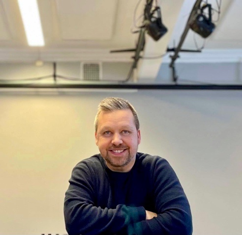

- Fritt å bruke
- Barnetrinnet
- Ungdomstrinnet
Øvingstavler og musikkverktøy for klasserommet
Verktøy som åpnes rett i nettleseren, uten innlogging: tavler for tall, lesing, engelsk og fagbegreper, og et piano og en gehørtrener til musikktimene. De er laget for elever som trenger noe ekstra, men hele klassen kan bruke dem.
Øvingstavler
Talltavla, Ordtavla, Engelsktavla og Begrepstavla. Til én elev, en liten gruppe eller hele klassen på storskjermen.
Til tavleneMusikkverktøy
Et piano med akkompagnement til akkordrekker, og en gehørtrener. Spill, lytt og lær akkordene.
Til piano og gehørtrenerMusikk
Innspillinger med Røyseng/Aase, Hekla Stålstrenga, Ingunn Bjørgo Band og Askerladden, med lytteeksempler.
Lytt
Hvem står bak
Jeg heter Stian Norgård Aase og har jobbet som musiker og pedagog i over 25 år. De siste årene har jeg jobbet mest på ungdomsskolen, mye med elever én og én i spesialundervisningen. Utdanningen min er i utøvende musikk og pedagogikk, med videreutdanning i spesialpedagogikk, matematikk og programmering.
Musikken har lært meg at en ferdighet bygges litt om gangen, med øving på riktig nivå. Verktøyene her er laget på samme måte: Jeg ser etter det eleven allerede mestrer, og lager det som trengs for neste steg.
Kontakt
Jeg tar gjerne imot spørsmål om musikk og om verktøyene, og om kurs for lærere eller samarbeid om nye verktøy. Send meg en e-post.